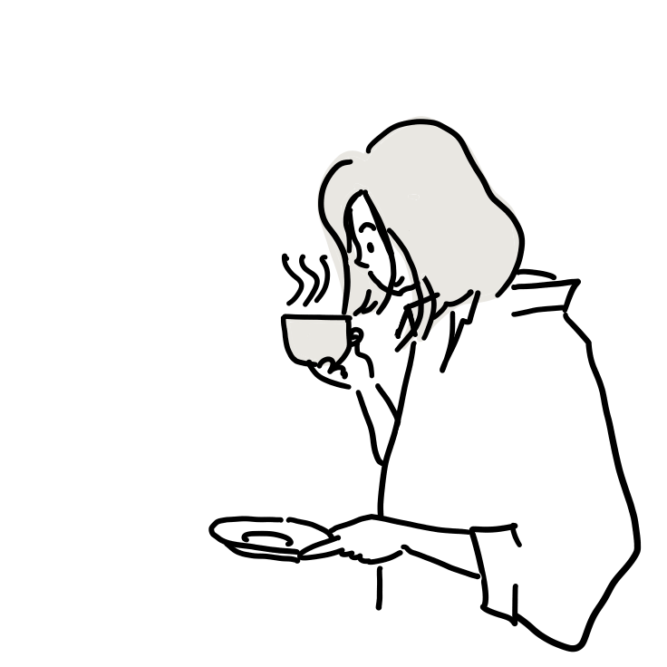

About
空間建築デザイン学科を卒業後、商空間のデザイナー（設計者）として約10年間勤務。
デザイナーとしてカフェ・美容室・大型商業施設など様々な分野のお店づくりに携わりました。
もっとクライアントさまとその先のユーザーさまの顔の見える距離感のデザインに
携わりたいと想いWebデザインスキルを身に付けフリーランスデザイナーへ
高木かなえ ／ TAKAKI KANAE

< 経歴 >
- 2010年
- 建築空間デザイン学科卒業
- 2012年
- 都市計画デザインコース大学院 修了
- 2012年
- 大手内装業社入社
- 2012年
- 大手内装業社入社
- 2012年
- 大手内装業社入社
- 2012〜2016年：営業部所属（営業・設計・施工まで担当）
- 2017〜2023年：クリエイティブ部所属（チーフデザイナー）
- 2024年
- 第二子の育児休暇中
フリーランスとして独立